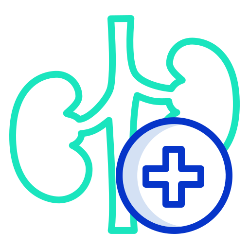

MEU FILHO FOI DIAGNOSTICADO COM IRC! E AGORA!?
Após o diagnóstico de IRC (Insuficiência Renal Crônica) em seu filho, é fundamental buscar orientação médica especializada, seguir rigorosamente o tratamento prescrito, controlar a dieta e a hidratação, realizar consultas de acompanhamento regularmente, oferecer apoio emocional à criança e à família, evitar automedicação, esclarecer dúvidas com o nefrologista e buscar apoio em grupos de suporte. Cada caso é único, e o tratamento deve ser personalizado para as necessidades individuais da criança.
O que é IRC?
A Insuficiência renal crônica é a condição na qual os rins perdem a capacidade de efetuar suas funções básicas. A insuficiência renal pode ser aguda (IRA), quando ocorre súbita e rápida perda da função renal, ou crônica (IRC), quando esta perda é lenta, progressiva e irreversível.
Quais são os meios de tratamento?
Para tratarmos a doeça renal há duas vias, sendo uma feita através da hemodialise e outra através do tratamento conservador, confira como é feito cada uma.
Hemodialise
A hemodiálise é realizado por meio de máquina que filtra o sangue, ou seja, faz o trabalho que o rim doente não pode fazer, eliminando o excesso de toxinas, sais minerais e líquidos.
Tratamento conservador
Consiste em todas as medidas clínicas (remédios, modificação da dieta, estilo de vida), que podem ser utilizadas para retardar a perda da função renal, reduzir os sintomas e prevenir complicações.
Nefrologia pediátrica e adulta
A nefrologia pediátrica é a subespecialidade da pediatria responsável por prevenir, diagnosticar e tratar de condições que assolam rins e bexiga. Nesse caso, os pacientes têm entre 0 e 18 anos de idade, ou seja, bebês, crianças e adolescentes. O nefrologista de adulto concentra-se no atendimento de pacientes com mais de 18 anos de idade. Lida com as doenças renais adquiridas que ocorrem na vida adulta, tem conhecimento em geriatria e no tratamento de doenças renais seja elas crônica, aguda, transplante e doenças renais que surgem com envelhecimento.